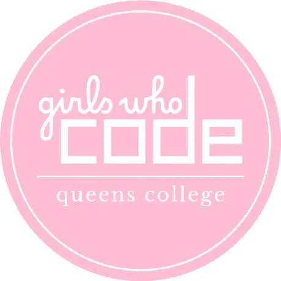

HalalBytes
HalalBytes is a project from my first hackathon, where my team won Best Beginner Hack. We faced challenges with API calls and integrating Firebase Real-Time Database, but our persistence and teamwork led us to the prototyping stage. It was also my first time using Figma, which was crucial for visualizing and iterating on our designs. The experience deepened my appreciation for both development and design. Check out the project on Devpost.

QC Sociology - Department Webmaster
As the Department Webmaster for Queens College Sociology, I enhance the department's digital presence by developing web pages, showcasing programs, faculty, and resources. I also design graphics, create materials, and produce audio-visual content to support initiatives and communications. Check out the website here QC Sociology Website.

Girls Who Code - College Mentor
As a college mentor, I organize a fall coding event and a spring campus visit for high school clubs, offering students a chance to explore coding, college life, and tech careers. I also participate in speed networking with corporate partners and engage in financial literacy initiatives to plan my future goals.

Ubiq Insider Program
I joined the Ubiq Insider Program, gaining hands-on experience with Ubiq, a spatial media platform that transforms digital memories into 3D environments. I tested features like spatial storytelling, gave feedback on privacy settings, helped brainstorm UI/UX improvements, and explored how emerging tech is changing the way we relive memories.